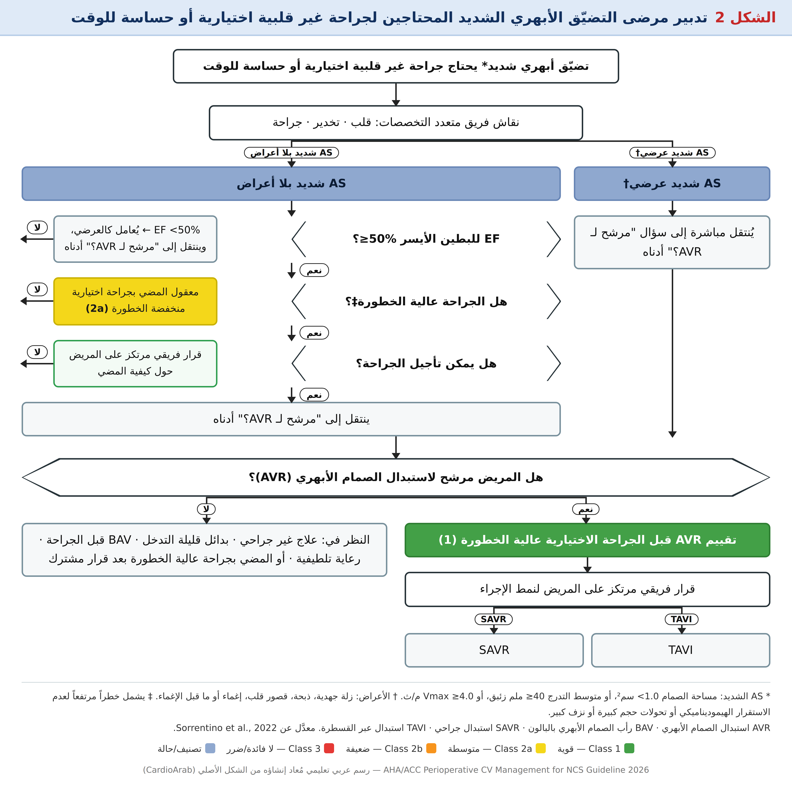
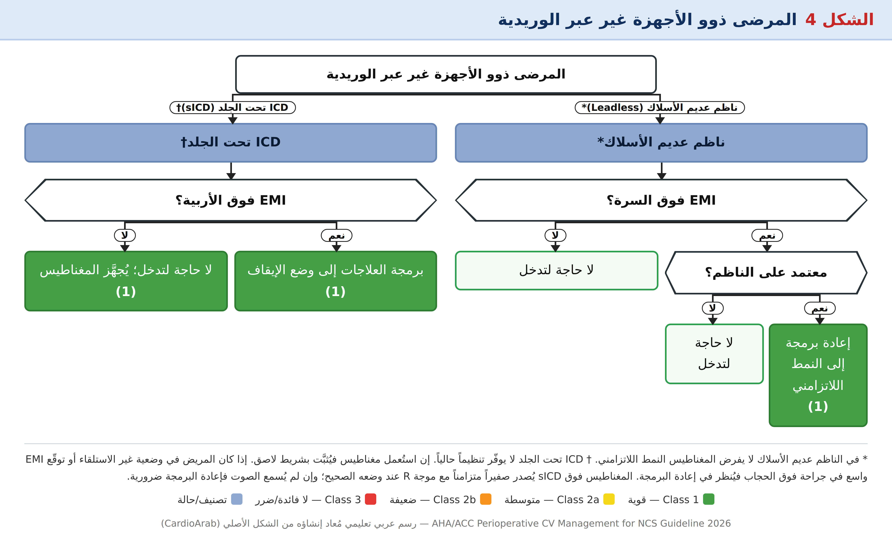

المرض الإكليلي وإعادة التوعية (6.1)
CAD موجود عند ≈18% من مرضى الجراحة الكبرى، ويرفع MACE، وقصة ACS تحمل خطراً أعلى من المرض الإكليلي المزمن (CCD). للتفاصيل الإجرائية يُحال إلى إرشاد 2021 ACC/AHA/SCAI للتوعية الإكليلية؛ ويمكن تطبيقه ما دام بالإمكان تأجيل الجراحة بما يناسب فترة DAPT.
* معدَّلة من إرشاد 2021 للتوعية الإكليلية.
| السيناريو | ماذا يُنصح | التفصيل |
|---|---|---|
| STEMI أو NSTEMI عالي الخطورة | إعادة توعية + تأجيل الجراحة (Class 1) | عالي الخطورة = صدمة قلبية، أو ذبحة مقاومة/اضطراب نظم عصيّ/عدم استقرار هيموديناميكي، أو GRACE >140 |
| CCD + تضيّق جذع أيسر >50% | إعادة توعية + تأجيل (2a) | الجذع الأيسر استُبعد من ISCHEMIA/COURAGE/BARI-2D؛ دلائل قديمة تدعم CABG؛ أنسب فئة تشريحية لفائدة البقيا قبل جراحة الأوعية |
| CCD بلا جذع أيسر | لا إعادة توعية روتينية (Class 3) | CARP (510): لا فرق في الوفاة/MI على 30 يوماً وسنة؛ استُثني الجذع الأيسر وEF <20% وAS الشديد |
| ذبحة مقاومة لأقصى GDMT | نهج فريق القلب قبل الجراحة | يُنظر خصوصاً في زرع الأعضاء وجراحة الأوعية وتعدد الأوعية |
• في جراحة الأوعية: إعادة التوعية نقلت الوفاة من القلبية إلى غير القلبية دون خفض مطلق في الوفيات.
• النزف أعلى مع PCI خصوصاً في أول 6 أشهر بعد DES.
• نقاط التوقيت بعد PCI → الجزء الرابع (القسم 7.5).
ارتفاع الضغط وإدارة الضغط المحيط بالجراحة (6.2)
يُصيب ارتفاع الضغط ≈25% من مرضى الجراحة الكبرى وهو سبب رئيسي لتأجيل الجراحة الاختيارية. لكن لا RCT عالية الجودة أثبتت أن خفض الضغط الحاد المحيط بالجراحة يقلل الأحداث، بل قد يضر.
* الحذر في المسنين ≥65، وذوي الضغط المنخفض/شبه الطبيعي، وعند ارتفاع خطر هبوط الضغط حسب الحالة ونوع الجراحة والتخدير. ‡ مكوّن أو أكثر من RCRI: CAD، HF، سكتة، كرياتينين >2.0، أنسولين.
| الفترة | الهدف | الدليل |
|---|---|---|
| قبل الجراحة | لا حاجة لتأجيل ما دام الضغط <180/110 (في غياب مكوّنات RCRI) | دراسة CPRD (251,000): DBP >90 ↔ وفيات 30 يوماً أعلى؛ ارتفاع الضغط يوم الجراحة قد يكون "معطف أبيض" → يُراجَع الضغط الخارجي الأساسي |
| أثناء الجراحة | MAP ≥60–65 أو SBP ≥90 | حدّ الضرر في الدراسات الرصدية: MAP <65 أو SBP <90 لنحو 15 دقيقة. INPRESS (298): خفض ≈25% نسبياً عند إبقاء SBP ضمن 10% من القاعدة. POISE-3 (7490): لا فائدة لاستراتيجية رفع MAP ≥80 مقابل ≥60 |
| بعد الجراحة | علاج MAP <60–65 أو SBP <90 | POISE-2: كل 10 دقائق إضافية بـ SBP <90 حتى اليوم الرابع ↔ OR 2.83 للـ MI/الوفاة؛ المراقبة في العناية قد تكشف الهبوط مبكراً |
| إعادة الأدوية | بأسرع وقت معقول | تأخير استئناف ACEi/ARB ↔ وفيات 30 يوماً أعلى (VA)؛ لكن تكثيف الخافضات عند الخروج عند رجال ≥65 ↔ إعادة قبول أعلى |
• ACEi/ARB: قد ترتبط بهبوط الضغط أثناء الجراحة إن استُمرّ بها (انظر 7.2).
• المريض غير القادر على الفم: خافضات وريدية معقولة.
• التحليل التجميعي (30 دراسة): تشخيص الـHTN ↔ زيادة 35% في المضاعفات القلبية الوعائية.
• التحليل أحادي المركز (58,276): SBP قبل التخدير >160 ارتبط بنتيجة مركّبة، لكن فقط عند من لديهم ≥1 من مكوّنات RCRI.
قصور القلب واعتلال العضلة الضخامي (6.3)
مرضى HF أكثر عرضة لمضاعفات الجراحة (التفاصيل العددية في Table 8، الجزء الثاني). تحسين علاج HF قبل الجراحة عالية الخطورة يرتبط بتقليل المضاعفات، وإيقاف GDMT دون سبب مرتبط بزيادة الوفيات.
* canagliflozin وdapagliflozin وempagliflozin ≥3 أيام؛ ertugliflozin ≥4 أيام قبل الجراحة المجدولة.
SGLT2i — لماذا وكيف؟
- الحماض الاستقلابي والكيتوني "السويّ السكر" (euglycemic ketoacidosis): سكر <250 ملغ/دل مع pH <7.3 وبيكربونات <18 ملي مكافئ/ل وكيتونات مرتفعة في الدم/البول.
- الآلية تشبه كيتوزية الصيام، تتفاقم بصيام الفترة المحيطة بالجراحة؛ الأعراض غير نوعية (غثيان، ألم بطني، زلة) والسكر طبيعي → يُشتبه عند anion gap acidosis مع كيتونات.
- عدّلت FDA الملصق عام 2022 (3–4 أيام) وأيّدته ADA وجهات أخرى.
- لا إرشاد رسمي لاستئنافها: يُفضّل حين يستقر المريض ويعود لحمية طبيعية.
GDMT في HFrEF (4 فئات)
RAS inhibition (ARNI أو ACEi أو ARB) · حاصرات بيتا · مضادات المينيرالوكورتيكويد · SGLT2i. وللـ HF متوسط/محفوظ EF علاجات موصى بها أيضاً، وكذلك للمرحلة B بلا أعراض.
اعتلال العضلة الضخامي (HCM — 6.3.1)
| الاعتبار (Table 9) | التفصيل |
|---|---|
| الأدوية | استمرار حاصرات بيتا و/أو CCB غير الديهيدروبيريدين دون انقطاع |
| السوائل والحمل القبلي | تجنب نقص الحجم ونقص الحمل القبلي (يزيد انسداد LVOT) |
| الضغط وما بعد الحمل | تجنب هبوط الضغط وانخفاض ما بعد الحمل |
| سرعة القلب | تجنب التسرع (لضمان امتلاء البطين)؛ الحفاظ على النظم الجيبي |
| عند هبوط الضغط | سوائل وريدية أولاً → ثم مقبضات ألفا (phenylephrine/vasopressin) لا مقلّدات بيتا |
| المراقبة | إيكو أثناء الجراحة (TEE) عند هبوط الضغط لتقييم انسداد LVOT؛ قد يُنظر في خط شرياني/وريد مركزي |
| حالات مختارة | حصر بيتا الوريدي لتقليل الانقباضية وتخفيف الانسداد |
| الإدارة | تجنب الإدرار الزائد والمقوّيات؛ إحالة لمراكز عالية الحجم؛ عناية مركّزة بعد الجراحة عند HCM الانسدادي |
HCM يصيب ≈1 من 500. أكثر المخاطر لدى: جراحة عالية الخطورة، هبوط ضغط مطوّل، انسداد LVOT قابل للاستحثاث، ومشاركة أمراض مرافقة.
ارتفاع الضغط الرئوي (6.3.2)
PH من أي نوع يرفع MACE مقارنة بغيره، وأعلى عند PH الشديد. البيان العلمي AHA 2023 يفصّل المقاربة (انظر Table 1).
* أدوية PAH: محفّزات مسار أكسيد النيتريك، حاصرات مستقبلات الإندوثيلين، ناهضات مسار البروستاسيكلين، أو مزيج. † PH الشديد: mPAP >40 ملم زئبق، أو PVR >5 Wood، أو دلائل إيكو على خلل RV مهم (RV/LV انبساطي >0.8، أو خلل RV متوسط-شديد).
| المفهوم | القيمة |
|---|---|
| PH ما قبل الشعيرات (precapillary) | mPAP >20 ملم زئبق، PAWP <15، PVR >2 Wood |
| PH شديد | mPAP >40 أو PVR >5 Wood أو خلل RV مهم |
| مجموعات WHO الأعلى خطراً للتحول إلى PH شديد | 1 (PAH)، 3 (رئوي)، 4 (CTEPH) |
• 143,846 مريض PH (0.81% من الجراحات): OR الوفاة/MI/سكتة ↑43%؛ وPAH: MACE ×2.5 وصدمة قلبية ×5.
• 145 مريض PAH: مضاعفات 42%؛ مؤشرات سوء المآل: NYHA ≥II، نسبة RVSP/SBP ≥0.66، استعمال مقبضات أثناء الجراحة.
• قبل الجراحة: قسطرة قلب أيمن حديثة + إيكو لتقييم RV؛ في الاختبارات قد تُجرى استجابة الأوعية (vasoreactivity) لتوجيه استعمال الموسّعات الاستنشاقية.
• VA-ECMO هو الدعم المفضل في قصور RV الناتج عن PH، وتجنب RVAD.
• المراقبة: قسطرة PA/وريد مركزي حسب الخطر؛ الاستعمال الروتيني للـ PAC محدود بسبب أخطاء التفسير.
القلب الخلقي عند البالغين (6.3.3)
مرضى ACHD أعلى خطراً للوفاة في المستشفى والإقامة الطويلة وإعادة القبول بعد الجراحة عالية الخطورة. الجراحة يُفضَّل أن تُجرى في مركز لديه برنامج ACHD.
* معدَّلة من إرشاد 2018 AHA/ACC لـ ACHD.
تصنيف الخطر قبل الجراحة غير القلبية (Table 10)
| الخطر | التشريح | الحالة الوظيفية/الهيموديناميكية |
|---|---|---|
| منخفض | آفات خلقية صغيرة معزولة؛ آفة مُصلَحة بلا shunt متبقٍّ؛ صمام أبهري ثنائي الشرفات ± مرض الأبهر | NYHA I، سعة جهد طبيعية، لا تضخم حجرات، لا shunt، لا PAH، لا اضطراب نظم |
| متوسط | shunt غير مصلَح متوسط-كبير (ASD، VSD، PDA، AVSD)؛ آفات مُصلَحة مع shunt متبقٍّ؛ آفات انسدادية يسارية (تضيّق تاجي خلقي، تحت-أبهري، فوق-أبهري، coarctation)؛ آفات يمنى انسدادية (تضيّق رئوي، TOF مُصلَح)؛ Ebstein؛ شذوذات إكليلية (من PA أو من الجيب المقابل) | NYHA II–IV، سعة جهد محدودة، shunt متبقٍّ، PAH، تضخم حجرات، خلل صمامي >خفيف، اضطراب نظم يستدعي علاجاً، HF |
| مرتفع | بطين واحد (Fontan أو ملطَّف)؛ ازرقاق غير مصلَح/ملطَّف؛ DORV؛ رتق رئوي؛ truncus؛ TGA (كلاسيكي/d-TGA؛ CCTGA/l-TGA)؛ قوس أبهري مقطوع | NYHA II–IV، سعة جهد محدودة، خلل صمامي >خفيف، اضطراب نظم يستدعي علاجاً، PAH، HF |
تدبير مريض ACHD للجراحة غير القلبية (Table 11)
- توضيح تشخيص ACHD ومراجعة التشريح، والإجراءات السابقة والمتبقيات والحالة الوظيفية
- عوامل ترفع الاعتلال/الوفاة: ازرقاق، HF، سعة جهد ضعيفة، PH، آفات متوسطة-مرتفعة، إجراءات عاجلة/إسعافية، جراحات الجهاز التنفسي والعصبي
- نقاش فريق متعدد التخصصات لتقليل الخطر
- نقاط: وقاية من التهاب الشغاف، منع الخثار الوريدي، مراقبة الكلية والكبد وتعديل الجرعات، الهيموديناميكا الأساسية، الحاجة لمراقبة غازية، التمييع المحيط بالجراحة، تشريح وريدي/شرياني شاذ، فلاتر هواء للخطوط الوريدية عند ازرقاق مع shunt يمين-يسار (خطر الصمّة المتناقضة)، اضطرابات النظم وبطء القلب، كثرة الكريات، مرض الأوعية الرئوية، تعديل حجم مانع التخثر في أنابيب التحاليل عند المزرقّين
في Eisenmenger أو بعد Fontan: تجنب زيادة ضغط البطن، نقص الحرارة، فرط ثاني أكسيد الكربون، الحماض، ونقص الحجم للحفاظ على PVR الأمثل.
LVAD ومتلقو زرع القلب (6.3.4–6.3.5)
LVAD (6.3.4)
مرضى LVAD يحتاجون تمييعاً علاجياً لمنع خثار المضخة والسكتة، وهم عرضة للنزف وعدوى كبرى وقصور أيمن واضطراب نظم وفشل تنفسي وكلوي وكبدي. وهم أعلى خطراً لـ MACE ووفيات المستشفى وAKI وسكتة ونزف هضمي. كانت الأرجحية أعلى للجراحة الاختيارية <6 أشهر مقابل ≥6 أشهر بعد زرع LVAD، لكن هذه بيانات من ما قبل العصر الحديث للأجهزة. يجب التنسيق مع فريق LVAD حول التوقيت والتعافي من الزرع واستراتيجية الغرس (جسر للزرع أو علاج نهائي) وتاريخ MACE.
متلقو زرع القلب (6.3.5 — بلا توصية رسمية)
- 3668 زرع قلب للبالغين في أمريكا عام 2022
- نقاط: نزع التعصيب (denervation) في القلب المزروع؛ تداخل مضادات المناعة مع أدوية التخدير؛ قرارات نقل الدم لتقليل HLA allosensitization وعدوى CMV
- توصي ISHLT بالتقييم قبل الجراحة بالتعاون مع فريق الزرع، خصوصاً في الجراحات الكبرى تحت التخدير العام أو الناحي
الأمراض الصمامية (6.4)
يحيل الغايدلاين للتفاصيل إلى إرشاد 2020 ACC/AHA للصمامات. المبدأ العام: الإيكو خلال 12 شهراً يكفي إن لم تتغير الأعراض/الحالة الوظيفية.
التضيّق الأبهري (AS — 6.4.1)
* معدَّلة من إرشاد 2020 للصمامات.

عرض المخطط كنص قابل للنسخ والبحث
الخوارزمية (Figure 2): AS الشديد في جراحة اختيارية أو حساسة للوقت
† أعراض: زلة جهدية، ذبحة، HF، إغماء أو ما قبله. ‡ يشمل خطراً مرتفعاً لعدم استقرار هيموديناميكي، تحولات حجم كبيرة، أو نزف كبير.
• 491 مريضاً AS شديد: MACE 5.4% (AVR سابق) مقابل 20.5% (غير معالَج) (P<0.001)؛ وأسوأ النتائج عند العرضيين غير المعالَجين.
• BAV: يمكن اعتباره جسراً في الجراحة العاجلة عالية الخطورة (البيانات متضاربة حول النتائج السريرية).
• الخطر أعلى عند العرضيين، وEF منخفض، وAS أشد، وPH مرافق، والجراحة العاجلة؛ يُدبَّر ذوو AS الشديد في مراكز لديها إمكانية تدخل أبهري.
• المراقبة: تجنب هبوط الضغط وارتفاعه المفرط والتسرع، وتجنب الجفاف أو فرط الحجم؛ قد تفيد المراقبة الغازية و/أو TEE.
التضيّق التاجي (MS — 6.4.2)
• عند تعذّر التدخل (إسعافي/عاجل): هدف الفترة المحيطة بالجراحة = معدل قلب منخفض-طبيعي، SVR مرتفع-طبيعي، حمل قبلي كافٍ، والحفاظ على النظم الجيبي.
• التسرع يقصّر الانبساط ويرفع التدرج عبر MV والضغط الرئوي → وذمة رئة وهبوط ضغط.
• يُنصح بالعناية المشدّدة أو مراقبة أطول في PACU، وقد تُستعمل قسطرة Swan-Ganz وخط شرياني وTEE.
القلس الأبهري والتاجي (6.4.3)
• AR: تجنب بطء القلب (لتقصير الامتلاء)؛ انتباه للحجم؛ AR لديه عدم استقرار هيموديناميكي ووذمة رئة وتنفس صناعي مطوّل أكثر من الشواهد؛ عوامل الوفاة: خلل انقباضي، كرياتينين >2 ملغ/دل، جراحة متوسطة-عالية الخطورة.
• يمكن اعتبار إيكو خلال 12 شهراً مقبولاً إن لم تتغير الأعراض. يُستعمل اختبار الجهد لتأكيد غياب الأعراض في حالات مختارة.
بعد TAVI أو MV TEER (6.4.4)
* الأدلة تدعم أمان الجراحة غير القلبية خلال 30 يوماً من TAVI عند الحاجة.
عوامل مرتبطة بسوء مآل بعد TAVI: NYHA IV، قصور قلب متفاقم سابقاً، CKD، EF <30%. وبعد TEER تحسّن MR الأولي وأحجام البطين والأذين والتحمّل الوظيفي وجودة الحياة، وإن كانت بيانات التوقيت والأمان محدودة.
الرجفان الأذيني (6.5)
الرجفان الأذيني أكثر اضطرابات النظم شيوعاً. مرضى AF المسبق أعلى خطراً للوفاة وHF والسكتة خلال 30 يوماً. وإن كان مستقراً هيموديناميكياً فلا حاجة لتغيير العلاج سوى تعليق مضاد التخثر (انظر 7.6). ومن لديه AF سيئ الضبط ينبغي تحسين ضبطه قبل الجراحة وفق إرشاد AF لعام 2023.
* معدَّلة من إرشاد AF 2023 ACC/AHA/ACCP/HRS.
POAF (الرجفان الأذيني بعد الجراحة) شائع ويختلف حسب الجراحة، وقد يكون بلا أعراض أو يسبب عدم استقرار. يرتبط بسكتة ووفيات قصيرة وبعيدة الأمد، والـ AF الانتيابي بعده عالي النكس بعد الخروج. لا RCTs تقارن ضبط المعدل مقابل النظم في POAF الجديد.
أجهزة القلب القابلة للزرع CIED (6.6)
يُعرَّف CIED بالقصة والفحص وسجلات المريض والأشعة. كلما اقترب مصدر الكهرباء (ESU) من المولّد أو الأسلاك زاد احتمال EMI، ويعتبر الخطر مهماً عند أقل من 15 سم. ESU تحت السرة غير محتمل أن يسبب EMI في الأجهزة عبر الوريدية. Bipolar ESU والمشارط فوق الصوتية غير محتملة التسبب بـ EMI.
* عند المعتمدين على الناظم مع ICD: تُعطَّل العلاجات الصاعقة وتُبرمج الجهاز إلى نمط لا تزامني لتجنب تثبيط التنظيم.

عرض المخطط كنص قابل للنسخ والبحث
الشكل 3 — الأجهزة عبر الوريدية
* EMI مهم عند مصدر <15 سم من المولّد. يجب توفر تنظيم/إزالة رجفان خارجيين، والتأكد من قدرات المغناطيس وردّ الجهاز عليه. يُنظر في استشارة فريق CIED لأجهزة CRT.

عرض المخطط كنص قابل للنسخ والبحث
الشكل 4 — الأجهزة غير عبر الوريدية
* المغناطيس لا يفرض التنظيم اللاتزامني في الناظم عديم الأسلاك. † sICD لا يوفّر تنظيماً؛ المغناطيس يُثبَّت بشريط لاصق ويُصدر صفيراً متزامناً مع R؛ وإن غاب الصفير فيلزم إعادة البرمجة؛ وإن كان المريض بوضعية غير الاستلقاء أو توقع EMI واسع فوق الحجاب فتُنظر إعادة البرمجة.
• معدل التنظيم بالمغناطيس 85–100 نبضة/د (ينخفض مع نضوب البطارية)؛ بعض الأجهزة تفرض اللاتزامن لـ 10 نبضات فقط.
• المغناطيس غير فعّال أحياناً عند السمنة أو الوضعية المنبطحة؛ لا يُعتمد عليه دون تأكيد مسبق لاستجابة الجهاز.
• عطّل ميزة الاستجابة للمعدل أثناء تفتيت الحصى أو العلاج بالصدمات الكهربائية (ECT).
• ESU أحادي القطب يحتاج قطباً مشتتاً بعيداً عن المولّد؛ EMI أكثر مع coagulation مقابل cutting.
• ضرورة وجود وسائل تنظيم/صدمة خارجية (باد) عند تعطيل الوظائف.
• قبل الخروج: استجواب الجهاز وإعادة البرمجة إلى الإعدادات الأصلية (سجلت وفيات مفاجئة بعد عدم إعادة تفعيل العلاج الصاعق)؛ ويمكن للمريض إرسال بيانات عن بُعد عند الخروج.
السكتة السابقة وانقطاع النفس النومي (6.7–6.8)
السكتة/TIA السابقة (6.7)
| التوقيت بعد السكتة | OR لنكس السكتة أو MACE |
|---|---|
| خلال 3 أشهر (سجل دنماركي) | OR 14.23 مقابل بلا سكتة سابقة |
| <30 يوماً | OR 8.0 |
| 61–90 يوماً | OR 5.0 |
| 6–12 شهراً | OR 4.76 |
نقص الخطر بين 61–90 يوماً و6–12 شهراً ضئيل جداً → التأجيل ≥6 أشهر لا يعطي حماية إضافية. الخطر الأساسي لنكس السكتة خلال 5 سنوات = 12%. لإدارة خطر السكتة يُحال لإرشاد AHA/ASA 2021.
انقطاع النفس النومي (6.8)
- OSA يصيب ≈34% من الرجال و17% من النساء بين 40–60 سنة
- تحليل 22 دراسة (184,968 مع OSA مقابل 2,848,846 بدونه): مضاعفات قلبية-دماغية أعلى، ومضاعفات رئوية ×2.5، وزيادة MI وAF
- دراسة مستقبلية (1218 مريضاً بلا تشخيص سابق وجراحة كبرى): 67.6% جُدد/غير مُشخَّصين سابقاً، 30.5% على الأقل متوسط، و11.2% شديد؛ فحصت بـ STOP-Bang
- إعادة جهاز الضغط الإيجابي (PAP) بعد الجراحة بأبكر وقت؛ والتخدير الناحي معقول لتقليل الأفيونات والمهدئات والمضاعفات الرئوية
جدول مختصر وخلاصة الجزء الثالث
| الحالة | قبل الجراحة | أثناء/بعد الجراحة |
|---|---|---|
| ACS | إعادة توعية + تأجيل (1) | — |
| CCD + جذع أيسر ≥50% | إعادة توعية + تأجيل (2a) | — |
| HTN | استمرار العلاج (2a)؛ تأجيل عند ≥180/110 + RCRI (2b) | MAP ≥60–65 أو SBP ≥90 (1)؛ استئناف الأدوية (1) |
| HF | إيقاف SGLT2i 3–4 أيام (1)؛ استمرار GDMT (2a) | — |
| HCM | تجنب المقوّيات والتسرع ونقص الحمل (3: ضرر) | phenylephrine/vasopressin عند هبوط الضغط |
| PAH | استمرار الأدوية (1) | مراقبة غازية (2a)؛ NO/بروستاسيكلين استنشاقي (2b) |
| PH شديد | إحالة لمركز PH (2a) | عناية مشدّدة بعد الجراحة |
| ACHD متوسط/مرتفع | استشارة ACHD (1) | فلاتر هواء عند shunt |
| LVAD | تنسيق مع فريق LVAD (1) | — |
| AS شديد | تقييم AVR (1)؛ إيكو (1) | تجنب هبوط الضغط/التسرع |
| MS شديد | تقييم تدخل (1) | مراقبة غازية (2a)؛ ضبط المعدل (2b) |
| قلس متوسط/شديد | إيكو (1)؛ المضي إن بلا أعراض و EF طبيعي (2a) | مراقبة 24–72 ساعة |
| بعد TAVI/TEER | الجراحة مبكراً معقولة (2a) | — |
| AF جديد بعد الجراحة | — | معالجة المحرضات (2a)؛ تمييع (2a)؛ متابعة (1) |
| CIED | خطة قبل الجراحة (1) | استعادة الوظيفة قبل الخروج (1) |
| سكتة/TIA | تأجيل ≥3 أشهر (2a) | — |
| OSA | فحص استبيان (2a) | PAP مبكراً؛ تخدير ناحي |
🔑 أبرز نقاط الجزء الثالث
- ACS وجذع أيسر ≥50% فقط يستدعيان إعادة توعية قبل الجراحة؛ بقية CAD لا (Class 3)
- الضغط: MAP ≥60–65 أو SBP ≥90 أثناء الجراحة؛ لا تأجيل للجراحة عند <180/110 بلا RCRI
- SGLT2i: توقف 3 أيام (4 لـ ertugliflozin)؛ GDMT الآخر يُستمر به
- HCM: ابتعد عن المقوّيات ونقص الحمل القبلي — ألفا-ناهضات وسوائل
- PH الشديد: mPAP >40 أو PVR >5 أو RV/LV >0.8 → مركز متخصص + مراقبة غازية
- AS الشديد: AVR أولاً إن كان مرشحاً، وإلا BAV أو قرار فريقي؛ والبلا أعراض EF ≥50% يمضي في الجراحة منخفضة الخطورة
- CIED: خطة قبل الجراحة + استعادة الوظيفة قبل الخروج
- السكتة: ≥3 أشهر، ولا فائدة إضافية بعد 6